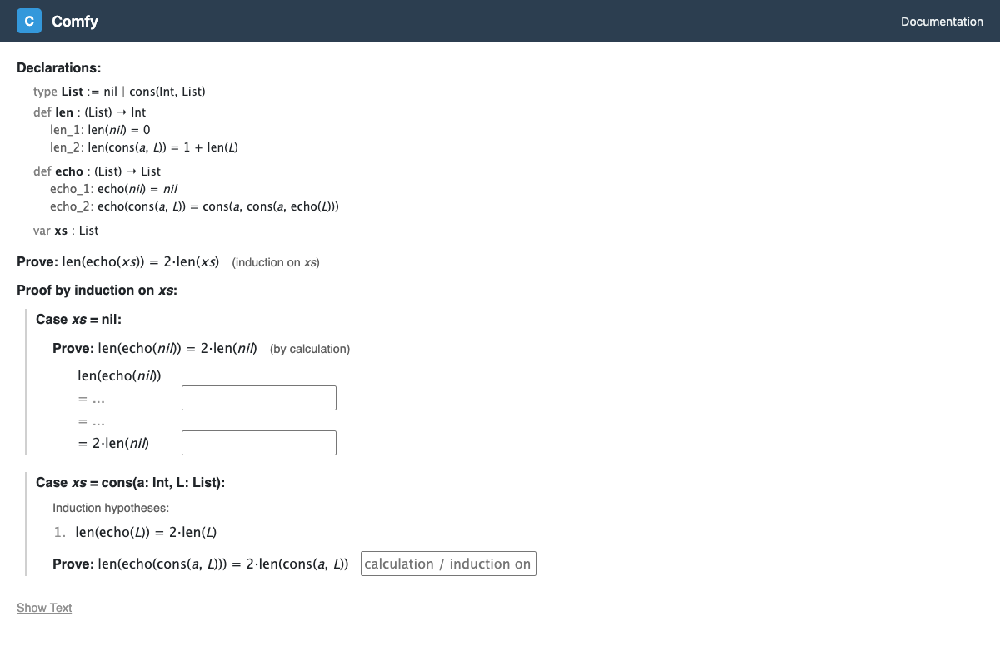

Calculation Proofs
A calculation proof works by transforming both sides of the goal formula until they meet in the middle. You build a chain of equalities (or inequalities) from the left side going forward, and from the right side going backward.
The Proof Chain
When you choose calculation, the proof view shows a chain that
starts with the left-hand side (LHS) of the goal at the top, and the
right-hand side (RHS) at the bottom:

LHS
= ... ← top input (forward rules)
= ... ← bottom input (backward tactics)
RHSThere are two input fields:
- The top input — for forward rules that transform from the top (LHS) downward.
- The bottom input — for backward tactics that transform from the bottom (RHS) upward.
Applying Rules
Type a rule into either input field and press Enter to apply it. If the rule is valid, a new line appears in the chain showing the result. If there's an error, a red message explains what went wrong.
Each input supports Tab-completion: start typing a rule name and press Tab to autocomplete. A dropdown of suggestions appears as you type.
How the Chain Works
Suppose you want to prove A = D. You might build this chain:
A
= B forward rule: transforms A to B
= C forward rule: transforms B to C
= C backward tactic: transforms D to C (working upward)
D
The proof is complete when the bottom of the forward chain
equals the top of the backward chain. In this example, both reach
C.
Completion and Collapse
When the forward and backward chains meet:
- The proof automatically collapses, hiding the input fields and showing just the clean chain.
- If the overall proof is done, a Complete! message appears.
- Click Edit to re-expand the chain and make changes.
- Click Done to manually collapse a complete chain.
Undoing Steps
Each input field has an × button that removes the last applied rule and puts the rule text back into the input, so you can edit and re-apply it.
Inequality Chains
Calculation proofs also work for goals with < or
<=. In this case, each step can use =,
<, or <=. The chain is valid if the combined
operators produce a relationship at least as strong as the goal:
- A chain of all
=steps proves=,<=, or<. - A chain with at least one
<and the rest=or<=proves<. - A chain with
<=(and no<) proves<=.
<= but the goal is <), a validity
error is displayed even though the chain connects.
Forward vs. Backward Rule Syntax
Forward and backward rules use slightly different syntax:
| Rule Type | Forward (top input) | Backward (bottom input) |
|---|---|---|
| Algebra | = expr |
expr = |
| Algebra (citing facts) | = expr 1 2 |
expr = 1 2 |
| Substitution | subst N |
subst N |
| Reverse substitution | unsub N |
unsub N |
| Apply definition | defof name |
defof name |
| Reverse definition | undef name |
undef name |
| Apply theorem | apply name |
apply name |
| Reverse theorem | unapp name |
unapp name |
The key difference is for algebra rules: forward rules have
the operator before the expression (= expr), while backward
tactics have the expression before the operator (expr =).
For the full list of rules and their detailed behavior, see the Rules Reference.
Example: Pure Algebra
Prove: x^2 + 2*x*y + y^2 = (x + y)^2
x^2 + 2*x*y + y^2
(no forward steps needed)
= x^2 + 2*x*y + y^2 (x^2 + 2*x*y + y^2) =
(x + y)^2
Here the algebra decision procedure handles the expansion automatically,
so a single backward step (x^2 + 2*x*y + y^2) = suffices.
Example: With Definitions
Prove: len(echo(nil)) = 2 * len(nil)
len(echo(nil))
= len(nil) defof echo_1
= 0 defof len_1
= 2*0 = 2*0
= 2*0 undef len_1
2 * len(nil)
Forward: unfold echo and len on the left side.
Backward: unfold len on the right side. They meet at
2*0.